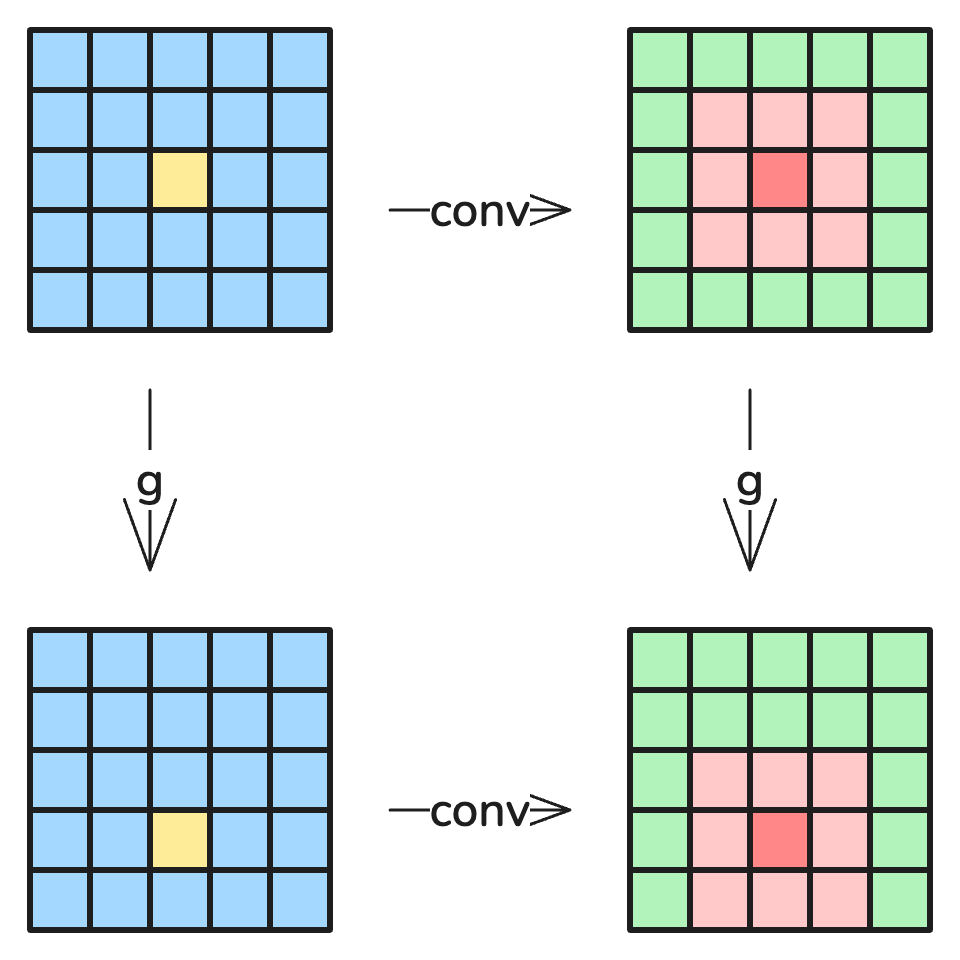

How Group Theory shows up in Computer Vision
The necessary group theory
Before we continue with anything machine learning-y, I want to make sure we're on the same page of what groups are. Simply put, groups are special sets of objects along with a well-defined binary operations between any two elements of the set, that "behaves nicely".
More formally, we stay a set $G$ and a binary operation $*$ is is a group $(G, *)$ if:
- For all $a, b \in G$, $a * b \in G$ (Closure)
- There exists an identity element $e$ such that $a * e = a = e * a$
- For all $a \in G$, there exists an inverse element $a^{-1}$ such that $a * a^{-1} = e = a^{-1} * a$
- Notice that $(a^{-1})^{-1} = a$
- For all $a,b,c \in G$, $a * (b * c) = (a * b) * c$ These are the so-called group axioms.
Let's spend some time playing around and reasoning with groups and the group axioms to build some intuition.
This is in no way a proper introduction to Abstract Algebra and Group Theory, just the minimal intuition needed to understand how they can be used in machine learning!
Informal examples
Imagine we have the set of integers and the operation addition, denoted $(\mathbb{Z}, +)$. Does this constitute a group?
Yes! Lets verify each of the 4 axioms:
- The addition of any two integers is also an integer.
- The addition of $0$ and any integer $n$ is just $n$, so $0 = e \in (\mathbb{Z}, +)$.
- We can get $0$ from any integer $n$ by adding the negative $-n$, so all elements $n$ have an inverse $n^{-1} = -n$.
- Lastly, we know that addition is associative, so naturally, associativity is inherited.
Now, lets take a look at a slightly more useful, but abstract group. Imagine our set, which we will call $C$, contains the rotations of 90, 180, 270, and 0 degrees. Is this set of rotations a group? What happens if we add a "flip" operation, and all of the combinations of flips and rotations?
Yes! I will let you show that they satisfy the group axioms, but this forms the group $D_4$. We usually call the rotations $r$ and the flips $f$.
In a deep way, we can view this group as a collection of "actions", but we can also view this group as the "symmetries of a square".
The point of the last example was to show that groups can "encode" physical translations in a natural way that regular numbers can't. Sure we can "say" that 0 degrees of rotation and 360 degrees of rotation are the same, but its not "natural".
In some ways, we can simplify elements with long names in $D_4$. This is because of the algebra we defined for the group! For example, $frrrfrr = rrr$. We can define an arbitrary algebra however we want! In other words, an abstract algebra.
There is a lot more I am skipping over, but his should equip you with the tools to tackle the coming problems.
The machine learning problem
Before we continue, I would recommend this 3Blue1Brown article on neural networks. It introduces the machine learning task that we will be working with.
Whats wrong with Grant's solution?
Nothing is inherently "wrong" with the solution he described, it clearly works! But that little preprocessing that happens before the data is fed to the network actually hides a crucial weakness of the network's architecture itself.
Notice what happens if you draw a "1" near the edge of the screen. The preprocessing moves it to the middle! The reason behind is is because the MLP memorizes pixel locations. Let's see what happens if we remove that little step. Now, I'm not skilled enough as a programmer to reverse engineer his site, so I recreated a network with the same hyperparamters as his. Namely, a MLP with two 16-dimension hidden layers.
See a little demo mnist_simple_mlp.
Now, what happens if you draw a "1" closer to the right hand side of the input field? It actually gets predicted as a "7"! This tells us that our network isn't really learning what we "want" it to. It is actually just memorizing pixel locations. It just so happens that in the dataset, a "vertical line around the right side of the screen" is heavily associated with a label of "7".
Yes in this case, the preprocessing does make the network do what we want, but in some cases, we don't really know what that preprocessing needs to be! In some sense, it can be very useful to have the neural network be able to "preprocess" the input all on its own.
Now, this "memorization" effect can be seen more clearly with this following example, where I have physically botched the dataset to have the different numbers in different locations in the input field. This example is adversarial, and serves to highlight the weakness of MLP's.
See a little demo mnist_biased_mlp.
Obviously, this isn't realistic, but this type of bias can manifest itself in subtle ways with real-world data. What if we trained an animal classifier, but it just so happens in the dataset, birds are often in the top of the image, but cats are at the bottom. What happens if we have a jumping cat or a sitting bird?
A simple solution
One way to fix this is to augment the dataset. We can shift around the dataset according to a uniform distribution, so our model will have seen examples of the numbers in all the locations.
See a little demo mnist_uniform_mlp.
Now, this works mostly, but it is sort of "spiky". We can get unlucky, where some locations just happened to have an uneven distribution of training examples, and a "1" becomes a "9" or something.
Sure we can just augment the data further, by forcing every example to show up in every possible location. But that is just wasteful! If our input resolution was higher, or if we had more examples, our dataset would be absurd! There is something fundamentally and spiritually wrong with this approach, similar to writing a massive "if-else" chain to test if a number is even/odd.
Now, I know some machine learning practitioners are screaming at their screens right now, so I will just spoil the surprise. The answer is a Convolutional Neural Net (CNN). But why is this really? For those that don't know what that is, don't worry, I will get there!
Formalizing our requirements
Notation
Before moving on, I want to define some notation. Neural nets are just functions that take in some input $x$ and produce some output $y$. The "behavior" of the neural net is determined by a set of weights/parameters $\theta$ that are learned during training. So, we write $f(\theta; x) = y$, to say the neural net $f$ a function of $x$ that produces $y$, and is parameterized by $\theta$.
What do we really "want"?
In this case, we want our network $f$ to be invariant under some set of transformations. Specifically, if we translate the input, we want the output to remain unchanged. As it turns out, we can describe set of 2D translations as a group! That is, the Euclidean Group $E_2$.
Why does this set of translations form a group?
Written out mathematically, we say $f(\theta; x) = f(\theta; g \cdot x)$ for all $g \in E_2$.
There is something special here that I have to gloss over in the interest of time. Usually, elements of a group $g \in G$ can only be "applied" to other elements $g' \in G$. However, we can make elements of $G$ "act" on any set we want, so long as it "preserves structure." Now, the way $E_2$ acts on $x$, the inputs of $f$, is exactly what you would expect.
How does a CNN accomplish this invariance?
 Source: Understanding Convolution Neural Networks
Source: Understanding Convolution Neural Networks
The above is a visualization of convolutional layer in a CNN. Notice that each element of the output is produced from a neighborhood of the input. Crucially, the filter that is applied to each patch of the input is the same.

On the top left, we have an input, and on the top right, we have an output of the convolution. On the bottom left, we have the input, with some translation $g \in E_2$ applied to it. In this case, $g$ is to translate 1 unit down.
Now, the bottom right of this diagram is the either:
- The top right translated by $g$.
- The convolution of the bottom left.
Crucially, these are equivalent. If we define a function $c(x)$ to be the convolution of $x$, we say that $c$ is equivariant under $E_2$ because $c(g \cdot x) = g \cdot c(x)$, for all $g \in E_2$.
Now, no matter how many layers of convolutions we stack on top of each other, the final output will always be equivariant under $E_2$.
Prove that $(c_n \circ \dots \circ c_2 \circ c_1)(g \cdot x) = g \cdot(c_n \circ \dots \circ c_2 \circ c_1)( x)$, for arbitrary convolutions $c_i$.
Now, to turn this equivariant function into an invariant function, we need some way to strip away the positional information. Suppose we have a function $p$ that just takes the average of all the elements in the input. This is known as an average pooling layer.
Notice that $p$ is invariant under $E_2$, so $p(x) = p(g \cdot x)$. Now, let $C = (c_n \circ \dots \circ c_2 \circ c_1)$ be the composition of arbitrary convolutions. We take $p(C(x))$ to be the final output of our network. Notice that, $p(C(g \cdot x)) = p(g \cdot C(X)) = p(C(x))$.
Is this even a neural net anymore?
We did it! We created some composable functions that look kind of like the layers of a neural net, that is invariant in the way that we want! But now, we lost the "neural" part. How does this function "learn"?
Going back into the individual convolutions, I never fully explained what the "filter" that we applied was. As it turns out, that filter is where we store the weights of this neural net. We take a weighted sum of the input according to the weights of this filter.
Generalizing
We have essentially created a recipe for defining parametrizable functions (neural nets) that can be invariant to the Euclidean group $E_2$. This naturally leads use to question if we can make neural nets invariant to any group we like. The answer is (mostly) yes! Unfortunately, I have run out of space in this article, but I do plan on writing more articles about this topic.